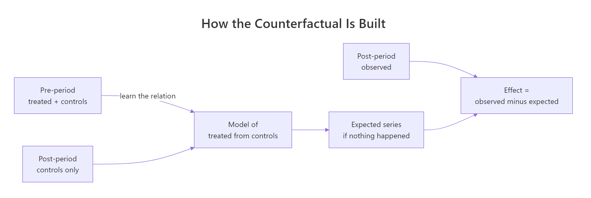
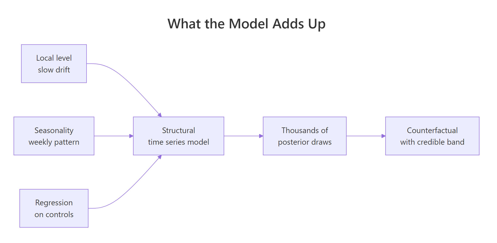
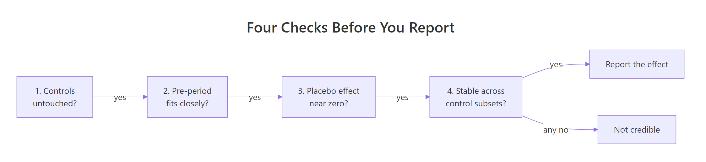
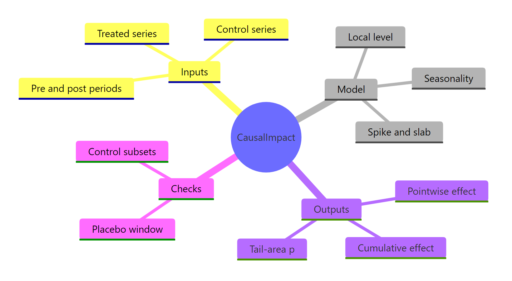

CausalImpact in R: Did the Intervention Move the Series?
CausalImpact answers one question: how much of the change after an intervention was actually caused by it. It fits a Bayesian structural time-series model on the data before the intervention, uses control series that the intervention never touched to predict what the treated series would have done anyway, and reports the gap between that prediction and reality.
What question is CausalImpact actually answering?
A campaign launches on a Monday. Sales the next month are higher than the month before. Everyone declares victory. The problem is that sales might have risen anyway, or fallen anyway, and the before-after gap silently mixes the campaign with everything else that moved. The block below builds a coffee chain's daily sales for three cities and computes that naive before-after number.
Three cities, 120 days of daily sales. Portland is the city that gets the campaign, so it is the treated series. Seattle and Denver never see the campaign, so they are the control series. Because we built this data ourselves, we know the true answer that any honest method has to recover: the campaign adds exactly 9 units a day for the last 30 days.
Now the naive calculation. Average Portland sales in the 30 days after launch, minus the average in the 90 days before.
The before-after comparison says the campaign was worth 2.79 units a day. The truth we built into the data is 9. The naive number is off by a factor of three, and nothing in the calculation warns you about it.
Here is what went wrong. Regional demand drifted downward over these four months. Portland's sales rose by 2.79 because the campaign pushed up by 9 while the market pulled down by roughly 6. Subtracting a before-average from an after-average cannot separate those two forces, because the "before" period contains a different market than the "after" period does.
Plotting the three cities makes the drift visible.
Run that block and look at the right-hand third of the chart. All three cities sag through October and November. After the dashed line, Portland separates from the other two and holds a visible gap. The control cities keep sagging. That gap, not the before-after difference, is the campaign.
Try it: The block below measures Seattle's own before-and-after drift over the same two windows. Run it, then adapt it to Denver and check whether both controls tell the same story.
Click to reveal solution
Explanation: Seattle fell 6.30 and Denver fell 5.31, neither of which saw a campaign. That shared decline is the market movement Portland was also exposed to. Add back roughly 6 units the market took away from the 2.79 Portland appeared to gain, and you land near the true effect of 9. Two independent controls agreeing on the direction and rough size of the drift is exactly the corroboration a counterfactual needs.
How do you build a counterfactual from control series?
The fix is to stop comparing Portland to its own past and start comparing it to a prediction of itself. That prediction is called the counterfactual: what Portland's sales would have been in December if the campaign had never run.
You cannot observe the counterfactual, because the campaign did run. But you can estimate it, and the control cities are how. Seattle and Denver are exposed to the same regional demand, the same weather, the same weekly rhythm, and the same holidays as Portland, but not to the campaign. So whatever those shared forces did to Portland in December, they also did to Seattle and Denver, and that is the only part of Portland's December you can still measure directly.
The logic runs in two stages, and the split between them is the whole method.

Figure 1: The counterfactual is learned in the pre-period and applied to the post-period.
In the pre-period, both Portland and the controls are untreated, so you can safely learn how Portland relates to them. In the post-period, Portland is contaminated by the campaign but the controls are still clean, so you feed the clean controls through the relationship you learned and get an uncontaminated prediction of Portland.
Before trusting any control, check that it actually tracks the treated series. A control that moves independently of Portland carries no information about what Portland would have done.
Seattle correlates 0.911 with Portland before the campaign, Denver 0.865. Both are strong. A correlation this high means that on days when Seattle is up, Portland is nearly always up too, which is exactly the co-movement a counterfactual needs.
Now learn the relationship. A linear model fitted on the 90 pre-campaign days answers "given today's Seattle and Denver sales, what is Portland's?"
The fitted rule is Portland is about 0.670 times Seattle plus 0.560 times Denver, minus 1.798. The R-squared of 0.868 says this rule explains 87% of Portland's day-to-day variation before the campaign. Critically, this model was fitted only on days 1 to 90, so the campaign could not have influenced a single one of these coefficients.
Apply that rule to all 120 days. For the pre-period it reproduces what we already saw. For the post-period it produces the counterfactual.
Read the first row. On 30 November, Portland actually sold 102.4. Given what Seattle and Denver did that day, the pre-campaign relationship expected Portland to sell 91.7. The 10.7 unit gap is the campaign's contribution on that single day.
Notice something the naive comparison could never do: the expected column moves up and down day by day. It tracks the weekly pattern and the market drift, because the controls track them. You are no longer comparing December to September. You are comparing December to a December that never happened.
Try it: Controls are not equally useful. The block below fits a counterfactual on Denver alone and compares it against the two-control model in fit. Add a Seattle-only model to the comparison, and work out which single control you would keep if you could only have one.
Click to reveal solution
Explanation: Seattle alone explains 83.1%, Denver alone 74.9%, and the pair 86.8%. If you could keep only one, keep Seattle. But notice the pair beats the better single control, because Denver carries some market signal Seattle misses. Every point of unexplained variation becomes noise in the counterfactual, which widens the uncertainty around your final effect estimate, so more good controls means a sharper answer.
How do pointwise and cumulative effects fall out of the counterfactual?
Once you have a counterfactual, the causal effect is one subtraction. CausalImpact reports it three ways, and all three come from that same subtraction.
- Pointwise effect: observed minus expected, for each day. What the campaign did on that specific day.
- Cumulative effect: the running total of the pointwise effects. Total units the campaign has produced so far.
- Average effect: the mean pointwise effect over the post-period. Typical daily lift.
Let's compute all three from the counterfactual we just built.
The hand-built counterfactual estimates an average daily lift of 9.99 units and a campaign total of 299.62 units over 30 days. The truth we planted was 9 per day and 270 total. We are close, and we got there without any special package, using a linear model and a subtraction.
Plotting all three quantities together produces the standard causal-impact picture.
The nested ifelse() on the first line is doing two small jobs at once. The inner one replaces every pre-period pointwise effect with a zero, so the running total starts counting at the launch date instead of accumulating 90 days of noise first. The outer one puts NA in the pre-period rows, so the cumulative panel simply draws nothing before the campaign rather than a flat line at zero.
The three panels tell one story. Panel 2 hovers around zero for 90 days, then jumps to roughly 10 and stays there. Panel 3 is flat at zero, then climbs in a near-straight line to about 300. A straight climb in the cumulative panel means a steady effect. A curve that flattens would mean the effect faded; a curve that steepens would mean it compounded.
There is one thing our hand-built version cannot do honestly, and it is worth seeing the failure before meeting the package. Let's try to put an uncertainty interval around that 9.99 the obvious way, using the spread of the pre-period residuals.
That interval, 8.99 to 10.99, is too narrow, and it is too narrow for three specific reasons.
First, it treats the fitted coefficients 0.670 and 0.560 as if they were known exactly, when they were estimated from 90 noisy days and carry their own uncertainty. Second, it assumes each day's error is independent of the day before, when sales errors are strongly autocorrelated: a bad week tends to stay bad. Third, and most importantly, it assumes the relationship between Portland and its controls is frozen forever, so that a prediction 30 days after the last training day is exactly as reliable as a prediction one day after. It is not.
Fixing all three is what the Bayesian structural time-series model is for.
Try it: Cumulative effects are how you answer "when did this pay for itself". The block below finds the date the campaign's cumulative effect first passes 150 units. Change the threshold to 250 and predict the answer before you run it.
Click to reveal solution
Explanation: 150 units took 14 days and 250 units took 25 days, which is almost exactly proportional. That linearity is the signature of a steady daily effect: each extra 100 units costs another 10 days. If the second threshold had arrived much later than proportion predicts, the effect would be decaying, which is the kind of thing the cumulative panel is for.
What does the Bayesian structural time series model add?
Our linear model made one assumption that quietly does a lot of damage: that after accounting for Seattle and Denver, whatever is left over in Portland is pure random noise with no memory. Real series do not behave that way. They wander. A store's baseline drifts up over a good quarter and down over a bad one for reasons no control series captures.
A structural time-series model handles this by writing the series as a sum of interpretable pieces, each of which is allowed to evolve over time, rather than as one fixed equation.

Figure 2: The structural model sums a drifting level, a seasonal pattern and a regression on controls.
Three pieces matter here:
- Local level. A slowly wandering baseline that captures drift the controls miss. This is the piece our linear model lacked entirely.
- Seasonality. A repeating pattern, most often day-of-week for daily business data.
- Regression on controls. The Seattle-and-Denver part, the same idea as our
lm(), but with a twist described below.
The regression twist is called a spike-and-slab prior, and it does automatic control selection. For each candidate control, the "spike" part represents the probability that its coefficient is exactly zero, meaning the control gets dropped entirely. The "slab" part is the distribution of the coefficient when it is not zero. Hand the model twenty candidate control cities and it will decide, control by control, which ones genuinely carry information, instead of overfitting to all twenty.
One more piece of vocabulary, because every number the package prints is built from it. This model is not fitted once to produce one set of coefficients the way lm() does. It is fitted by simulation: a randomised algorithm called MCMC (Markov chain Monte Carlo) draws a thousand plausible versions of the model, each with its own level path, its own seasonal pattern and its own control coefficients. Each of those thousand versions then produces its own counterfactual for the post-period, and its own effect estimate. Those thousand versions are the posterior draws.
Every interval in this post from here on is read straight off their spread. A 95% credible interval is the range covering the middle 95% of the draws. That is the difference from the confidence interval we computed by hand a moment ago: a credible interval says where the effect itself plausibly lies given this model and this data, which is what most people already assume an interval means.
The math, in two lines
If you are not interested in the math, skip to the code below. The practical behaviour is what matters, and the next block shows it directly.
A local level model says the thing you observe is a hidden baseline plus measurement noise, and that the hidden baseline takes a small random step each day.
$$y_t = \mu_t + \beta^\top x_t + \varepsilon_t, \qquad \varepsilon_t \sim N(0, \sigma_\varepsilon^2)$$
$$\mu_{t+1} = \mu_t + \eta_t, \qquad \eta_t \sim N(0, \sigma_\eta^2)$$
Where:
- $y_t$ = the treated series on day $t$ (Portland sales)
- $\mu_t$ = the hidden local level, the drifting baseline you never observe directly
- $x_t$ = the control series on day $t$ (Seattle and Denver)
- $\beta$ = the regression coefficients on the controls, the ones spike-and-slab may zero out
- $\varepsilon_t$ = observation noise, why today's reading is not exactly the baseline
- $\eta_t$ = the level's random step, why tomorrow's baseline is not exactly today's
- $\sigma_\eta$ = how far the level is allowed to wander per day, controlled by
prior.level.sd
The second equation is the entire difference from ordinary regression. Setting $\sigma_\eta = 0$ freezes the level and recovers our lm(). Letting $\sigma_\eta$ grow lets the baseline move day to day and track the data more closely.
A random walk is easy to see in code. The hidden level below takes one small step per day, and the observations scatter around it.
The level column never jumps, it only nudges: -0.591, then -0.564, then -2.081. The observed column bounces around it. If you only saw observed, separating the wander from the bounce is exactly the estimation problem the model solves.
Here is the consequence that matters for your intervals. Because the level takes an independent random step every day, uncertainty about where it will be compounds with the forecast horizon.
Two thousand simulated random walks, and the spread across them at four horizons. One day out, the walks are scattered by about 0.98. Thirty days out, by 5.60. The uncertainty grows roughly with the square root of the horizon, because thirty independent steps accumulate.
This is why a real CausalImpact plot shows a counterfactual band that fans out to the right, and why our naive fixed-width interval was wrong. The model does not claim to know Portland's baseline on day 30 as precisely as on day 1, so the band it draws around the counterfactual gets wider every day.
Try it: The block below simulates the spread yourself. Theory says the spread at horizon $h$ should be $\sqrt{h}$. Put the measured and theoretical values side by side and judge how well they agree.
Click to reveal solution
Explanation: Measured and theoretical values agree to within a few percent at every horizon, and the small gaps are sampling noise from using 2000 draws rather than infinitely many. The practical reading: a counterfactual 30 days out is roughly five and a half times less certain than one day out, purely from level drift, before any other source of error is counted.
How do you run CausalImpact() and read what it gives back?
You now understand every moving part, so the package call is short. CausalImpact() takes three arguments:
data- a matrix, data frame or zoo object where the first column is the response and every other column is a control. Column order matters; nothing else identifies the treated series.pre.period- start and end of the untreated window, asc(start, end).post.period- start and end of the treated window.
install.packages("CausalImpact"), then re-run the data block from the first section locally so sales exists. Every output shown below is real, captured from a local run on R 4.6.0 with CausalImpact 1.4.1 and bsts 0.9.11.library(CausalImpact)
set.seed(7)
ci_data <- sales[, c("portland", "seattle", "denver")] # response FIRST
impact <- CausalImpact(ci_data, pre.period = c(1, 90), post.period = c(91, 120))
summary(impact)
#> Posterior inference {CausalImpact}
#>
#> Average Cumulative
#> Actual 110 3302
#> Prediction (s.d.) 100 (0.87) 3004 (25.97)
#> 95% CI [98, 102] [2953, 3054]
#>
#> Absolute effect (s.d.) 9.9 (0.87) 297.9 (25.97)
#> 95% CI [8.3, 12] [247.7, 349]
#>
#> Relative effect (s.d.) 9.9% (0.95%) 9.9% (0.95%)
#> 95% CI [8.1%, 12%] [8.1%, 12%]
#>
#> Posterior tail-area probability p: 0.00119
#> Posterior probability of an effect: 99.88053%
#>
#> For more details, type: summary(impact, "report")The package recovers an average daily effect of 9.9 units with a 95% interval of [8.3, 12], against a true value of 9. Our hand-built version got 9.99 as a point estimate, so the point estimates agree. What the package adds is that interval, and it is wider than the naive 8.99 to 10.99 we computed by hand, exactly as predicted.
One CausalImpact object holds four things. Knowing the layout saves you from re-running a slow model to get a number you already have.
names(impact)
#> [1] "series" "summary" "report" "model"
names(impact$series)
#> [1] "response" "cum.response" "point.pred" "point.pred.lower"
#> [5] "point.pred.upper" "cum.pred" "cum.pred.lower" "cum.pred.upper"
#> [9] "point.effect" "point.effect.lower" "point.effect.upper" "cum.effect"
#> [13] "cum.effect.lower" "cum.effect.upper" impact$series is a zoo object with one row per day and the fourteen columns above: the observed response, the counterfactual with its bounds, and the pointwise and cumulative effects with theirs. impact$summary is the numeric table behind the printed summary. impact$report is the narrative text. impact$model holds the fitted bsts object.
Calling plot(impact) draws the same three panels we built by hand, with one addition: shaded credible bands around the counterfactual, the pointwise effect and the cumulative effect. Those bands are the payoff for using the package.
set.seed() before CausalImpact() in any analysis you intend to share, or two people running your script will report different numbers and neither will know why.Try it: Assembling the input in the wrong column order is the single most common CausalImpact mistake, and it fails silently by treating a control as the response. The block below builds the matrix correctly and checks it. Now build a version with Seattle first and confirm you can spot the difference from the check alone.
Click to reveal solution
Explanation: Swap two columns and CausalImpact would treat Seattle as the treated series and Portland as a control. It would run without complaint and report an effect on a city that never had a campaign, most likely a small one near zero, which reads exactly like "the campaign did not work". Selecting columns by name in an explicit order is the one-line habit that prevents this.
Decoding every field of the summary
The summary table packs a lot into a small space, and misreading one field is how good analyses turn into wrong decisions. Here is every row, in plain language.
| Field | What it means | How to use it |
|---|---|---|
| Actual | Observed mean (or sum) over the post-period | The raw number everyone already knows |
| Prediction (s.d.) | Counterfactual mean, with its standard deviation | What would have happened without the intervention |
| 95% CI (prediction) | Credible interval for the counterfactual | How precisely the model pins the baseline |
| Absolute effect | Actual minus Prediction | The causal estimate in the series' own units |
| 95% CI (effect) | Credible interval for the effect | Report this, never the point estimate alone |
| Relative effect | Absolute effect as a percentage of Prediction | The number for slides; note the denominator is the counterfactual, not the actual |
| Posterior tail-area probability p | The fraction of posterior draws whose counterfactual came out at least as extreme as what was observed | Small means the gap is unlikely to be noise |
| Posterior probability of an effect | 1 minus p, as a percentage | The same information, stated positively |
The two columns matter as much as the rows. Average describes a typical day in the post-period. Cumulative sums over all 30 days. The relative effect is identical in both columns, because scaling numerator and denominator by the same 30 days changes nothing.
The package also writes the whole thing out in English, which is genuinely useful for pasting into a document.
summary(impact, "report")
#> Analysis report {CausalImpact}
#>
#>
#> During the post-intervention period, the response variable had an average value of approx. 110.07. By contrast, in the absence of an intervention, we would have expected an average response of 100.14. The 95% interval of this counterfactual prediction is [98.42, 101.82]. Subtracting this prediction from the observed response yields an estimate of the causal effect the intervention had on the response variable. This effect is 9.93 with a 95% interval of [8.26, 11.65]. For a discussion of the significance of this effect, see below.
#>
#> Summing up the individual data points during the post-intervention period (which can only sometimes be meaningfully interpreted), the response variable had an overall value of 3.30K. By contrast, had the intervention not taken place, we would have expected a sum of 3.00K. The 95% interval of this prediction is [2.95K, 3.05K].
#>
#> The above results are given in terms of absolute numbers. In relative terms, the response variable showed an increase of +10%. The 95% interval of this percentage is [+8%, +12%].
#>
#> This means that the positive effect observed during the intervention period is statistically significant and unlikely to be due to random fluctuations. It should be noted, however, that the question of whether this increase also bears substantive significance can only be answered by comparing the absolute effect (9.93) to the original goal of the underlying intervention.
#>
#> The probability of obtaining this effect by chance is very small (Bayesian one-sided tail-area probability p = 0.001). This means the effect is statistically significant. It can be considered causal if the model assumptions are satisfied.Read that last sentence carefully, because it is the most important sentence the package prints: it can be considered causal if the model assumptions are satisfied. The p value tells you the effect is unlikely to be noise. It says nothing about whether your controls were clean or your relationship was stable. Those are your job, and the four trustworthiness checks later in this post are how you do it.
For programmatic work, pull the numbers instead of parsing text.
round(impact$summary[, c("Actual", "Pred", "AbsEffect",
"AbsEffect.lower", "AbsEffect.upper", "RelEffect", "p")], 3)
#> Actual Pred AbsEffect AbsEffect.lower AbsEffect.upper RelEffect p
#> Average 110.072 100.142 9.930 8.256 11.649 0.099 0.001
#> Cumulative 3302.148 3004.249 297.899 247.674 349.478 0.099 0.001
round(head(impact$series[91:120, c("response", "point.pred",
"point.pred.lower", "point.pred.upper", "point.effect")], 3), 2)
#> response point.pred point.pred.lower point.pred.upper point.effect
#> 91 102.38 91.70 85.67 97.76 10.68
#> 92 116.21 104.25 98.31 110.62 11.96
#> 93 110.98 101.03 94.66 107.27 9.95Two things worth noticing. RelEffect is stored as a proportion (0.099), not a percentage, so multiply by 100 before putting it on a slide. And on day 91 the model's counterfactual is 91.70, essentially identical to the 91.7 our hand-built linear model predicted, which is a good sanity check that the package is doing what we think it is.
Try it: The block below reconstructs the Average row from its two headline numbers. Do the same for the Cumulative row, where Actual is 3302.148 and Prediction is 3004.249, and confirm the relative effect really is identical across the two rows.
Click to reveal solution
Explanation: The absolute effect scaled by 30 days, from 9.93 to 297.90, but the relative effect stayed at 9.92% because both numerator and denominator scaled together. Note also that the relative effect divides by the counterfactual prediction, not by the actual. Dividing by the actual 110.072 would give 9.02% instead of 9.92%, understating the lift, because the counterfactual is the baseline the intervention was measured against.
How do you use real dates and more than one control?
Row indices are fine for a tutorial and painful in production, where the intervention has a calendar date and your data has gaps. A zoo object is a matrix with a vector of dates attached to its rows as an index, and CausalImpact reads that index: hand it one and you can specify the periods as dates instead of row numbers.
library(zoo)
ci_zoo <- zoo(as.matrix(sales[, c("portland", "seattle", "denver")]), sales$day)
set.seed(7)
impact_dates <- CausalImpact(ci_zoo,
pre.period = as.Date(c("2025-09-01", "2025-11-29")),
post.period = as.Date(c("2025-11-30", "2025-12-29")))
impact_dates$summary[, c("Actual", "Pred", "AbsEffect", "RelEffect", "p")]
#> Actual Pred AbsEffect RelEffect p
#> Average 110.0716 100.1416 9.929965 0.09925214 0.001194743
#> Cumulative 3302.1481 3004.2492 297.898952 0.09925214 0.001194743Identical numbers to the index version, which is the point: the dates are a labelling convenience, not a modelling change. Note that pre.period ends the day before post.period begins. Leave a gap and those days are dropped from the analysis entirely; overlap them and the function throws an error.
Now the question of how much the controls are really buying you. The spike-and-slab prior reports, for each control, the fraction of posterior draws in which it was included.
round(colMeans(impact$model$bsts.model$coefficients != 0), 3)
#> (Intercept) seattle denver
#> 0 1 1 Both cities were included in 100% of draws, so the model considers each genuinely informative. If you fed it ten candidate cities and half came back near 0, those halves are noise and you can drop them. Inclusion probabilities are the main reason to be generous with candidate controls: the prior does the pruning, so you do not have to guess in advance.
To see what controls are worth, take them away. CausalImpact will happily run on a single series with no controls at all, extrapolating the treated series' own trend and seasonality.
set.seed(7)
impact_solo <- CausalImpact(sales$portland, c(1, 90), c(91, 120))
impact_solo$summary[, c("Pred", "AbsEffect", "AbsEffect.lower",
"AbsEffect.upper", "p")]
#> Pred AbsEffect AbsEffect.lower AbsEffect.upper p
#> Average 107.1821 2.889521 -0.5723074 6.227351 0.05454545
#> Cumulative 3215.4625 86.685622 -17.1692206 186.820517 0.05454545Without controls, the estimate collapses to 2.89 with an interval of [-0.57, 6.23] that straddles zero, and p rises to 0.055. The model cannot detect a real effect of 9 that it found easily a moment ago. Look closely and you will see why: the no-control prediction is 107.18, almost exactly the pre-period average, where the two-control model predicted 100.14. With nothing external to tell it the market fell, the model held the baseline near where it had been. That 7-unit overstatement of the baseline comes straight out of the effect: 9.9 of real lift minus roughly 7 of missed market decline leaves the 2.89 it reports.
Try it: In production you know the launch date, not the row number. The block below derives both period pairs from a launch date. Re-run it for a launch date of 2025-12-10 and check that the two windows stay adjacent.
Click to reveal solution
Explanation: Deriving the pre-period end as the row before the launch guarantees the windows are adjacent with no gap and no overlap, which is the constraint CausalImpact enforces, and it holds for any launch date. Notice the cost of the later date though: the post-period shrank from 30 days to 20, so this analysis would carry a wider interval purely from having less post-period data.
How do you tune the model for seasonality and drift?
Default settings work well when the series is smooth and the post-period is short. Two situations need tuning: the series has a strong repeating pattern, or the baseline drifts more than the default prior expects. Both are handled through model.args.
| Argument | Default | What it does | When to change it |
|---|---|---|---|
niter |
1000 | MCMC draws | Raise to 5000+ if estimates wobble between seeds |
nseasons |
1 (none) | Number of seasons in a cycle | 7 for daily data with weekly pattern, 12 for monthly with annual |
season.duration |
1 | Time points per season | 7 with nseasons = 52 for weekly seasons on daily data |
prior.level.sd |
0.01 | How freely the local level drifts | Raise to 0.1 for volatile baselines, lower for stable ones |
dynamic.regression |
FALSE | Let control coefficients change over time | When the treated-to-control relationship slowly evolves |
standardize.data |
TRUE | Scale before fitting | Leave alone in almost all cases |
Our data has a strong weekly pattern, since Saturdays run 14 units above a Sunday baseline. Telling the model about it explicitly means the seasonal term absorbs that swing instead of leaving it in the residual.
set.seed(7)
impact_wk <- CausalImpact(ci_data, c(1, 90), c(91, 120),
model.args = list(nseasons = 7, season.duration = 1))
impact_wk$summary[, c("Actual", "Pred", "AbsEffect",
"AbsEffect.lower", "AbsEffect.upper", "p")]
#> Actual Pred AbsEffect AbsEffect.lower AbsEffect.upper p
#> Average 110.0716 100.4578 9.61385 7.846339 11.34996 0.001197605
#> Cumulative 3302.1481 3013.7326 288.41551 235.390174 340.49884 0.001197605The estimate moves from 9.93 to 9.61, closer to the true 9. nseasons = 7 says one cycle is seven time points, and season.duration = 1 says each season lasts one time point, which together mean day-of-week. For weekly seasons on daily data you would use nseasons = 52, season.duration = 7.
The estimate barely moved here because our controls already carry the weekly pattern, so the regression was absorbing it. When you have weak controls, adding the correct seasonality can change the answer substantially.
Now prior.level.sd, which is the direct knob on how far the baseline is allowed to wander. The default 0.01 assumes a fairly stable level. Raising it to 0.1 lets the level move much further each day, so it follows the data far more closely.
set.seed(7)
impact_flex <- CausalImpact(ci_data, c(1, 90), c(91, 120),
model.args = list(prior.level.sd = 0.1))
impact_flex$summary[, c("Pred", "AbsEffect", "AbsEffect.lower",
"AbsEffect.upper", "p")]
#> Pred AbsEffect AbsEffect.lower AbsEffect.upper p
#> Average 99.65257 10.41903 4.646153 16.33816 0.001067236
#> Cumulative 2989.57707 312.57104 139.384579 490.14491 0.001067236Look at what that bought and what it cost. The point estimate moved modestly, from 9.93 to 10.42. The interval blew up from [8.26, 11.65] to [4.65, 16.34], nearly three times wider. A level free to wander can follow almost any post-period pattern, so the model can no longer rule out that a wandering baseline produced the jump on its own.
prior.level.sd when you have real evidence the baseline shifts, such as a visibly wandering pre-period the default cannot track. Do not raise it because the default gave you a result you dislike. Choose it from the pre-period fit, before you look at the effect estimate.Try it: model.args is an ordinary named list, so building it separately makes an analysis script easier to audit. The block below sets weekly seasonality and 5000 iterations. Add a loose level prior and switch on dynamic regression, then check the structure.
Click to reveal solution
Explanation: Because it is a plain list, you can define one settings object at the top of a script and reuse it across every model, guaranteeing your placebo test and your real analysis use identical settings. That matters more than it sounds: a placebo run with different settings proves nothing about the real run. Be aware that this particular combination, a loose level prior plus dynamic regression, is the most permissive model in the table and will give you the widest intervals of any setting here.
How do you know the estimate is trustworthy?
CausalImpact will return a confident-looking number for any data you hand it, including data where every assumption is violated. The output is not evidence. These four checks are.

Figure 3: Four checks stand between a model output and a number you can report.
Check one: did the controls stay clean? This is a question about your world, not your data. Did the campaign, the price change, or the outage touch any control market? Could customers substitute between treated and control? Only you can answer this, and no diagnostic will save you if the answer is yes.
Check two: does the model fit the pre-period? If the counterfactual cannot track the treated series over 90 days where you know the truth, there is no reason to believe it over 30 days where you do not.
pre_resid <- impact$series$response[1:90] - impact$series$point.pred[1:90]
round(c(pre_rmse = sqrt(mean(pre_resid^2)),
pre_mape = mean(abs(pre_resid / impact$series$response[1:90])) * 100), 3)
#> pre_rmse pre_mape
#> 2.774 2.107 Typical pre-period error is 2.77 units, about 2.1% of Portland's average daily sales. That is small relative to the 9.93 effect we are claiming, which is the comparison that matters. If your pre-period error were 8 units and your claimed effect 9, the effect would be indistinguishable from ordinary model error.
Check three: does a fake intervention produce a null result? This is the placebo test, and it is the single most valuable check available. Pick a date in the pre-period where nothing happened, pretend the intervention occurred then, and run the identical analysis. A trustworthy setup returns an effect near zero.
set.seed(7)
placebo <- CausalImpact(ci_data[1:90, ], pre.period = c(1, 60),
post.period = c(61, 90))
placebo$summary[, c("Actual", "Pred", "AbsEffect",
"AbsEffect.lower", "AbsEffect.upper", "p")]
#> Actual Pred AbsEffect AbsEffect.lower AbsEffect.upper p
#> Average 103.8128 103.8098 0.003050177 -1.74763 1.604273 0.4935218
#> Cumulative 3114.3849 3114.2934 0.091505321 -52.42890 48.128199 0.4935218This is what a clean placebo looks like. The estimated effect is 0.003, the interval [-1.75, 1.60] is centred on zero, and p is 0.494, meaning the model found nothing, which is correct because nothing happened on day 61. Note that we truncated the data at row 90 so no genuinely treated day could leak into the placebo window.
If instead the placebo had returned an effect of 4 with p below 0.05, you would know your setup manufactures effects out of noise, and the 9.93 from the real analysis would be worthless.
Check four: is the answer stable across control subsets? Refit while dropping one control at a time. Estimates that swing wildly mean one control is doing all the work, and your result rests on that single series being clean.
set.seed(7)
loo <- sapply(c("seattle", "denver"), function(drop) {
keep <- setdiff(c("seattle", "denver"), drop)
m <- CausalImpact(sales[, c("portland", keep)], c(1, 90), c(91, 120))
m$summary["Average", "AbsEffect"]
})
round(loo, 2)
#> seattle denver
#> 10.23 9.01 Reading this needs care: the seattle column is the estimate with Seattle dropped, so it uses Denver alone. Dropping Seattle gives 10.23, dropping Denver gives 9.01, and using both gives 9.93. All three tell the same story, so no single control is carrying the result.
Try it: One placebo is a sample of size one. The block below builds three placebo windows that split the pre-period at rows 50, 60 and 70, each running through row 90. Their post-periods are 40, 30 and 20 days long, which makes them hard to compare. Rebuild them so every placebo post-period is exactly 30 days, matching the real analysis.
Click to reveal solution
Explanation: Fixing the post-period at 30 days makes each placebo directly comparable to the real analysis, because interval width depends on post-period length. The cut at 70 had to be dropped: rows 71 to 100 would reach past row 90 into genuinely treated days, and a placebo that includes real intervention days will find a real effect and tell you your method is broken when it is not.
What those checks are protecting you from
Every failure below produces a plausible number. Several produce a highly significant one. The model cannot detect any of them.
| Failure | What happens | How to catch it |
|---|---|---|
| Contaminated control | Effect is dragged toward zero, or inflated | Domain knowledge; regress each control on the others |
| Unstable relationship | Counterfactual drifts off, effect is spurious | Placebo test; pre-period fit on the most recent weeks |
| Pre-period too short | Model cannot learn seasonality or level dynamics | Use at least 2 to 3 full seasonal cycles |
| Post-period too long | Interval widens until nothing is detectable | Keep post-periods short; report early windows too |
| Structural break after launch | A competitor exit gets credited to your campaign | Check whether controls also broke |
| Many candidate interventions | Some will look significant by chance | Pre-register the intervention date; adjust for multiplicity |
| Count or proportion data | Gaussian model gives impossible intervals | Model on a log or logit scale, then transform back |
| Reading p as proof | Significant but invalid results get shipped | Run the four checks above before you report anything |
The first row deserves a demonstration, because it is the most common and the most dangerous. Suppose the campaign spilled over into Seattle, giving Seattle the same 9-unit boost. The analysis code is unchanged, and nothing errors.
bad <- sales
bad$seattle[91:120] <- bad$seattle[91:120] + 9 # the campaign leaked into Seattle
set.seed(7)
impact_bad <- CausalImpact(bad[, c("portland", "seattle", "denver")],
c(1, 90), c(91, 120))
impact_bad$summary[, c("Pred", "AbsEffect", "AbsEffect.lower",
"AbsEffect.upper", "p")]
#> Pred AbsEffect AbsEffect.lower AbsEffect.upper p
#> Average 106.2229 3.848675 1.66542 5.991245 0.001194743
#> Cumulative 3186.6879 115.460239 49.96261 179.737354 0.001194743The estimate falls from 9.93 to 3.85, a 61% understatement of the true effect of 9. And look at the p value: 0.001, exactly as significant as before. The 95% interval, [1.67, 5.99], excludes both zero and the truth.
This is the point to internalise. A contaminated control does not produce a warning, a wide interval, or a large p. It produces a confident, significant, wrong answer. The boosted Seattle made the counterfactual predict a higher Portland baseline, so most of the real effect was absorbed into the prediction rather than the estimate.
Try it: Contamination is partly detectable from the data. If a control was hit by the intervention, its relationship to the other controls will break in the post-period. The block below tests Seattle that way, clean against contaminated. Run the same test on Denver, which was never touched in either version, and see whether it stays clean.
Click to reveal solution
Explanation: In clean data, Seattle behaves exactly as its relationship with Denver predicts, so the residual is 0.26, essentially zero. Contaminated, it runs 9.26 above prediction, recovering the leak almost exactly. Now look at Denver: it scores -1.78 in clean data, but -6.81 once Seattle is contaminated, even though Denver itself was never touched. That is the important lesson. Contamination propagates, because every control is being judged against the others. The test flags that something is wrong with the control set; it cannot tell you which member is the culprit. When one control lights up, re-examine all of them.
Complete Example: measuring a city campaign end to end
Here is the whole workflow in the order you should actually run it, with the checks before the answer rather than after. Every block runs locally against the sales data from the first section.
Step 1: screen the controls. Check each control correlates with the treated series, and that no control's own behaviour shifted in the post-period.
library(CausalImpact)
pre_rows <- 1:90
post_rows <- 91:120
ctrl_screen <- data.frame(
control = c("seattle", "denver"),
cor_with_portland = round(c(cor(sales$portland[pre_rows], sales$seattle[pre_rows]),
cor(sales$portland[pre_rows], sales$denver[pre_rows])), 3),
own_post_shift = round(c(
mean(sales$seattle[post_rows] - predict(lm(seattle ~ denver, sales[pre_rows, ]),
sales[post_rows, ])),
mean(sales$denver[post_rows] - predict(lm(denver ~ seattle, sales[pre_rows, ]),
sales[post_rows, ]))), 2))
ctrl_screen
#> control cor_with_portland own_post_shift
#> 1 seattle 0.911 0.26
#> 2 denver 0.865 -1.78Both controls correlate strongly with Portland, and neither shifted much relative to the other after launch (0.26 and -1.78 against a series averaging around 100). No sign of contamination.
Step 2: run the placebo before the real analysis. Split the untreated period and confirm the setup finds nothing where nothing happened.
set.seed(7)
ci_data <- sales[, c("portland", "seattle", "denver")]
placebo <- CausalImpact(ci_data[1:90, ], c(1, 60), c(61, 90))
round(placebo$summary["Average", c("AbsEffect", "AbsEffect.lower",
"AbsEffect.upper", "p")], 3)
#> AbsEffect AbsEffect.lower AbsEffect.upper p
#> Average 0.003 -1.748 1.604 0.494Effect 0.003, interval spanning zero, p 0.494. The setup does not manufacture effects. Proceed.
Step 3: fit the real model with weekly seasonality, since the data is daily and has an obvious day-of-week pattern.
set.seed(7)
impact <- CausalImpact(ci_data, c(1, 90), c(91, 120),
model.args = list(nseasons = 7, season.duration = 1))
round(impact$summary["Average", c("Actual", "Pred", "AbsEffect",
"AbsEffect.lower", "AbsEffect.upper", "RelEffect", "p")], 3)
#> Actual Pred AbsEffect AbsEffect.lower AbsEffect.upper RelEffect p
#> Average 110.072 100.458 9.614 7.846 11.35 0.096 0.001Step 4: confirm the pre-period fit is small relative to the effect you are claiming.
pre_resid <- impact$series$response[1:90] - impact$series$point.pred[1:90]
round(c(pre_rmse = sqrt(mean(pre_resid^2)),
pct_of_mean = sqrt(mean(pre_resid^2)) / mean(sales$portland[1:90]) * 100), 2)
#> pre_rmse pct_of_mean
#> 2.22 2.07 Typical error 2.22 units, 2.07% of the mean, against a claimed effect of 9.61. The effect is more than four times the model's own noise.
Step 5: test sensitivity to the control set.
set.seed(7)
sens <- sapply(list(seattle_only = "seattle", denver_only = "denver",
both = c("seattle", "denver")),
function(keep) {
m <- CausalImpact(sales[, c("portland", keep)], c(1, 90), c(91, 120),
model.args = list(nseasons = 7, season.duration = 1))
m$summary["Average", "AbsEffect"]
})
round(sens, 2)
#> seattle_only denver_only both
#> 9.04 9.06 9.61 Three control specifications, three estimates between 9.04 and 9.61. The conclusion does not depend on which controls you picked.
Step 6: state the result in the units the business cares about.
round(c(daily_lift = impact$summary["Average", "AbsEffect"],
campaign_total = impact$summary["Cumulative", "AbsEffect"],
pct = impact$summary["Average", "RelEffect"] * 100), 2)
#> daily_lift campaign_total pct
#> 9.61 288.42 9.58 The write-up: the campaign lifted Portland sales by 9.61 units a day, 95% interval [7.85, 11.35], for a total of 288 units over 30 days, a 9.58% increase over the counterfactual. Controls showed no contamination, a placebo test on the pre-period returned a null result, pre-period fit error was 2.1% of the mean, and the estimate held between 9.04 and 9.61 across control subsets.
Compare that to where we started: the before-after comparison said 2.79.
Practice Exercises
These use the live in-browser R and the sales data from the first section, so they run on the hand-built counterfactual rather than on the package. Every one of them is a technique you would use in a real analysis.
Exercise 1: Does the window length change the story?
Analysts often report early results before a campaign finishes. Using only the first 15 days of the post-period (rows 91 to 105), compute the model-based lift from the pre-period counterfactual, and the naive before-after lift over the same window. Store them in my_model_lift and my_naive_lift.
Click to reveal solution
Explanation: Over the first 15 days the counterfactual method reports 11.47 and the naive comparison 6.44. Both are further from the truth of 9 than the full-window estimates, because 15 days is a small sample. But notice the gap between the two methods narrowed, from 9.99 versus 2.79 to 11.47 versus 6.44. That is because the market had drifted less by mid-December than by end-December, so the naive method had less accumulated drift to get wrong. Its accuracy depends entirely on how much the world moved, which is not something you can know in advance.
Exercise 2: Build a rolling placebo test
One placebo test is a sample of size one. Write a function my_placebo(cut) that trains on rows 1 to cut, predicts rows cut + 1 to 90, and returns the mean pseudo-effect. Run it at cuts 50, 60, 70 and 80, and compare the four results against the real effect.
Click to reveal solution
Explanation: Four fake interventions produce effects of 0.51, 0.14, -0.03 and 0.06. That distribution is your empirical null: it tells you the method produces roughly plus or minus 0.5 when nothing happens. The real effect of 9.99 is about twenty times larger than the biggest placebo. This is a stronger argument than any p value, because it is measured on your actual series rather than assumed from a model.
Exercise 3: Write a contamination detector
Write a function my_flag(df, ctrl, pre_rows, post_rows) that tests whether a named control was itself affected by the intervention. It should regress that control on the other controls using pre-period rows, predict the post-period, and return the mean residual. Test it on clean data, on data where Seattle was contaminated by 9 units, and on Denver.
Click to reveal solution
Explanation: reformulate(others, ctrl) builds the formula seattle ~ denver programmatically, so the function generalises to any number of controls. Clean Seattle scores 0.26, contaminated Seattle scores 9.26, and Denver scores -1.78. The interpretation needs judgement: -1.78 is larger than 0.26 but far smaller than 9.26, and it reflects ordinary noise in a two-control setup where each control is being predicted from a single other series. Run this on every control and investigate any value that stands out from the rest.
Frequently Asked Questions
How long should the pre-period be? Long enough to cover at least two or three full seasonal cycles. For daily data with weekly seasonality, that means several months, not several weeks. The model needs to see the pattern repeat before it can separate the pattern from the trend.
How many control series should I use? More candidates than you think, and let spike-and-slab prune them. Ten to twenty candidate markets is comfortable. The binding constraint is not the number of controls but whether each one is genuinely untouched by the intervention.
Can I use CausalImpact without control series? Yes, and the no-control run earlier in this post shows the cost: our effect estimate collapsed from 9.93 to 2.89 with an interval spanning zero. Without controls the model extrapolates the treated series' own trend, so anything the market did lands inside your effect. Use the no-control mode only when the series is highly predictable from its own history and the post-period is very short.
Why do my numbers change every time I run it? The model is fitted by MCMC, which is a randomised algorithm. Call set.seed() before CausalImpact(). If results still move meaningfully between seeds, raise niter from the default 1000 to 5000 or more.
Is the p value a real p-value? It is a Bayesian one-sided posterior tail-area probability: the fraction of counterfactual simulations that produced an effect at least as extreme as the one observed. It is not a frequentist p-value, though it is interpreted similarly in practice. It measures precision, never validity.
Can I use it on counts or proportions? The model assumes Gaussian errors, so raw counts near zero and proportions near 0 or 1 can produce impossible intervals such as negative counts. Model on a log scale for counts, a logit scale for proportions, then transform the counterfactual back before subtracting.
What if there were several interventions? Analyse the first one with a post-period that ends before the second begins. Overlapping interventions cannot be separated by this method, because the counterfactual for the second is already contaminated by the first.
How does this compare to difference-in-differences and synthetic control? All three build a counterfactual from untreated units. Difference-in-differences assumes treated and control move in parallel and takes a simple double difference, which is easy to explain but assumes a rigid relationship. Synthetic control builds a weighted average of controls that matches the treated unit's pre-period, usually with non-negative weights summing to one. CausalImpact is the Bayesian time-series relative: it adds an explicitly modelled trend and seasonality, does automatic control selection, and, unlike the classical versions of the other two, gives you full posterior uncertainty for free.
Summary

Figure 4: The whole workflow at a glance: inputs, model, outputs, checks.
| Idea | What to remember |
|---|---|
| The question | Not "what changed after", but "what would have happened without" |
| Naive before-after | Mixes the intervention with everything else that moved; gave 2.79 against a truth of 9 |
| Control series | Untreated series that share the same market forces; they carry the market signal into the post-period |
| The pre-period | Where the treated-to-control relationship is learned, uncontaminated by the intervention |
| The counterfactual | Controls fed through that relationship in the post-period |
| Pointwise effect | Observed minus counterfactual, day by day |
| Cumulative effect | Running total; the number the business books |
| Local level | A drifting baseline whose uncertainty grows with horizon, which is why the band fans out |
| Spike-and-slab | Automatic control selection; be generous with candidates |
nseasons |
7 with season.duration = 1 for day-of-week on daily data |
prior.level.sd |
Raise for volatile baselines; it costs interval width |
| The four checks | Clean controls, good pre-period fit, null placebo, stability across control subsets |
| The p value | Measures precision, not validity; a contaminated control gave 3.85 at p = 0.001 |
References
- Brodersen, K. H., Gallusser, F., Koehler, J., Remy, N., Scott, S. L. - Inferring Causal Impact Using Bayesian Structural Time-Series Models. Annals of Applied Statistics, 9(1), 247-274 (2015). The original paper behind the package. Link
- Brodersen, K. H. and Hauser, A. - CausalImpact: Inferring Causal Effects using Bayesian Structural Time-Series Models. Package vignette. Link
- CausalImpact on CRAN - reference manual and installation. Link
- google/CausalImpact - source repository and issue tracker. Link
- Scott, S. L. and Varian, H. R. - Predicting the Present with Bayesian Structural Time Series. International Journal of Mathematical Modelling and Numerical Optimisation, 5(1-2), 4-23 (2014). The bsts engine and its spike-and-slab regression. Link
- bsts on CRAN - the Bayesian structural time series package CausalImpact is built on. Link
- Abadie, A. - Using Synthetic Controls: Feasibility, Data Requirements, and Methodological Aspects. Journal of Economic Literature, 59(2), 391-425 (2021). The closest alternative method, and when to prefer it. Link
- Google Open Source Blog - CausalImpact: A new open-source package for estimating causal effects in time series (2014). The original announcement and motivating examples. Link
Continue Learning
- Kalman Filter in R - the state-space machinery that estimates the local level inside CausalImpact, explained on its own terms.
- Changepoint Detection in R - the complementary problem: when you do not know the intervention date and need to find where the series shifted.
- Time Series Regression in R - regression with autocorrelated errors, the foundation the structural model generalises.